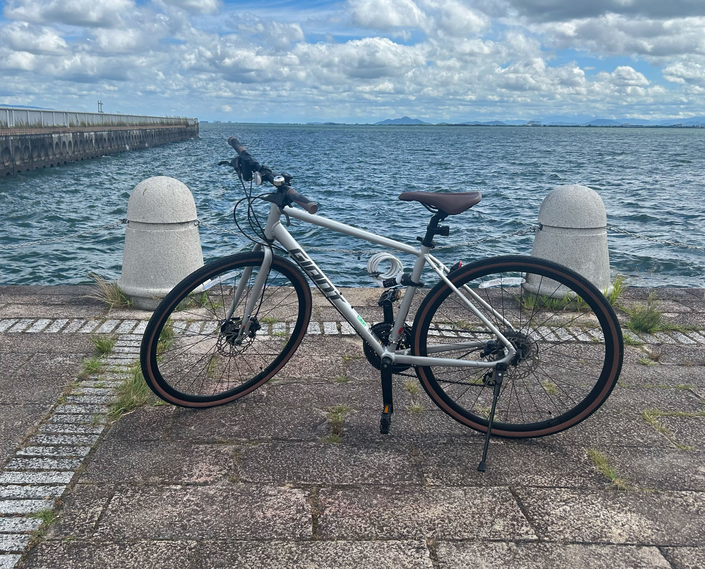
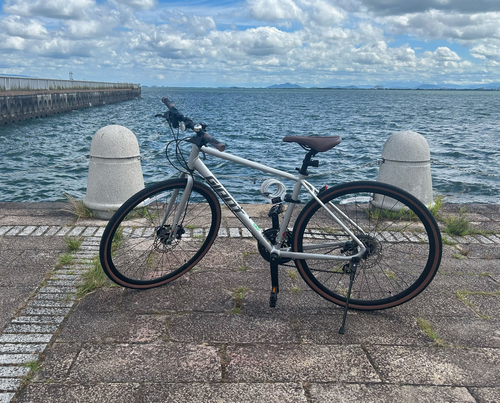

サイクリング
週末によく長距離を走っています。
まだ体力がないので直線距離80kmの実家まで帰ったのが最大距離です。
 ひとり語り帖
ひとり語り帖
週末によく長距離を走っています。
まだ体力がないので直線距離80kmの実家まで帰ったのが最大距離です。
FPSやオープンワールド系が好きで、最近はAPEXや原神にハマっています。
原神の推しはタルタリヤです。
パソコンを組んだり、オーバークロックするのが好きです。